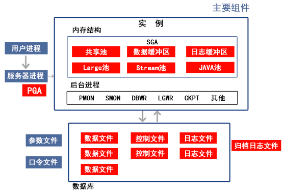

数据库（Database）是按照数据结构来组织、存储和管理数据的仓库，它产生于距今五十年前，随着信息技术和市场的发展，特别是二十世纪九十年代 以后，数据管理不再仅仅是存储和管理数据，而转变成用户所需要的各种数据管理的方式。数据库有很多种类型，从最简单的存储有各种数据的表格到能够 进行海量数据存储的大型数据库系统都在各个方面得到了广泛的应用。
在日常工作中，常常需要把某些相关的数据放进这样的“仓库”，并根据管理的需要进行相应的处理。例如，企业或事业单位的人事部门常常要把本单 位职工的基本情况(职工号、姓名、年龄、性别、籍贯、工资、简历等)存放在表中，这张表就可以看成是一个数据库。有了这个"数据仓库"我们就可以根据 需要随时查询某职工的基本情况，也可以查询工资在某个范围内的职工人数等等。此外，在财务管理、仓库管理、生产管理中也需要建立众多的这种"数据 库"，使其可以利用计算机实现财务、仓库、生产的自动化管理。
